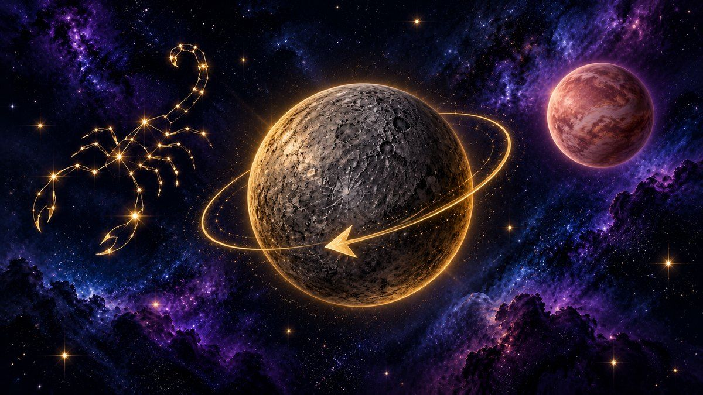

Mercurio retrógrado en Escorpio 2026: fechas, curiosidades y cómo te afecta

Si en los próximos días se te cae el internet, un mensaje llega a la persona equivocada o reaparece alguien del pasado, es muy probable que alguien a tu alrededor diga la frase más famosa de la astrología moderna: "es culpa de Mercurio retrógrado". Y esta vez tendrá motivos para decirlo, porque el último Mercurio retrógrado de 2026 está a punto de empezar… y no llega solo.
📅 Las fechas clave
🌒 Sombra previa: desde el 4 de octubre
☿ Mercurio retrógrado: del 24 de octubre al 13 de noviembre de 2026, en Escorpio
🌘 Sombra posterior: hasta el 30 de noviembre
♀ Coincide con Venus retrógrado, que empieza el 3 de octubre
¿Qué es Mercurio retrógrado?
En astrología, Mercurio es el planeta de la comunicación, los mensajes, los viajes cortos, los contratos y la tecnología. Cuando "retrograda", la tradición dice que todo eso se enreda: malentendidos, retrasos, aparatos que fallan y conversaciones pendientes que vuelven a aparecer. Más que un castigo, se interpreta como una pausa para revisar, repensar y reparar: por eso tantas palabras de este periodo empiezan con "re".
7 curiosidades que casi nadie conoce
1. Mercurio nunca va hacia atrás. Es una ilusión óptica. Imagina que vas en la autopista y adelantas a un auto más lento: por un momento parece que ese auto retrocede, aunque siga avanzando. Lo mismo pasa entre la Tierra y Mercurio por sus distintas velocidades alrededor del Sol.
2. Pasa unas tres veces al año. Mercurio da la vuelta al Sol en solo 88 días, así que este "efecto de adelantamiento" se repite con frecuencia y cada vez dura unas tres semanas.
3. En Mercurio, un día dura más que un año. Desde que sale el Sol hasta que vuelve a salir pasan unos 176 días terrestres, el doble de lo que tarda el planeta en dar la vuelta al Sol.
4. Desde Mercurio, el Sol también "retrocede". En ciertos momentos de su órbita, quien estuviera en su superficie vería al Sol detenerse en el cielo, ir un poco hacia atrás y luego seguir su camino. Un retrógrado al revés.
5. Su fama de "mensajero" tiene miles de años. Los babilonios asociaban este planeta con Nabu, el dios de la escritura y los escribas. Después los griegos lo llamaron Hermes y los romanos Mercurio, el mensajero de los dioses con sandalias aladas. De ahí viene su relación con la comunicación.
6. La palabra viene del latín. "Retrógrado" significa literalmente "que da pasos hacia atrás" (retro, atrás, y gradus, paso).
7. En 2026, todos los retrógrados cayeron en signos de agua. El primero fue en Piscis (febrero–marzo), el segundo en Cáncer (junio–julio) y este último en Escorpio. Por eso la astrología describe 2026 como un año en que los malentendidos tuvieron un fuerte componente emocional.
¿Por qué este retrógrado es especial?
Por dos motivos. Primero, ocurre en Escorpio, el signo más intenso del zodiaco, asociado con los secretos, la verdad oculta, la intimidad y las transformaciones profundas. Según la astrología, este tránsito no habla tanto de correos perdidos como de conversaciones pendientes, secretos que salen a la luz y emociones guardadas. Mercurio retrocederá del grado 21 al grado 5 de Escorpio.
Segundo, coincide con Venus retrógrado, el planeta del amor y el dinero. Cuando los dos retrogradan a la vez, la tradición astrológica dice que es un periodo ideal para revisar relaciones, reencuentros con exparejas y decisiones económicas compartidas. Dicho de otro modo: si alguien del pasado te escribe a finales de octubre, no te sorprendas.
¿Qué es la "sombra" de Mercurio?
Antes y después de cada retrógrado hay unas semanas llamadas sombra, en las que Mercurio recorre los mismos grados del zodiaco que luego recorrerá hacia atrás (o que acaba de recorrer). Muchos astrólogos dicen que en la sombra previa "se siembra" el tema que después se revisa, y en la posterior se termina de cerrar. Por eso esta etapa empieza el 4 de octubre y no termina del todo hasta el 30 de noviembre.
Lo que se recomienda hacer (y evitar)
✅ Buen momento para: revisar documentos, retomar proyectos que dejaste a medias, ordenar tu casa y tus archivos, hacer copias de seguridad, reconectar con viejos amigos y tener esa conversación que llevas tiempo posponiendo, pero con calma.
⚠️ Mejor con más cuidado: firmar contratos importantes sin leer la letra pequeña, comprar aparatos electrónicos caros, lanzar algo totalmente nuevo o mandar mensajes impulsivos a medianoche. Si no puedes esperar, revisa todo dos veces.
Cómo puede sentirlo cada signo
♈ Aries: temas de dinero compartido y deudas piden revisión. ♉ Tauro: tu pareja o un socio quiere hablar en serio. ♊ Géminis: Mercurio es tu regente; ordena tu rutina y cuida tu descanso. ♋ Cáncer: vuelve un romance o un proyecto creativo del pasado. ♌ Leo: asuntos familiares y del hogar salen a la conversación. ♍ Virgo: también regido por Mercurio; revisa lo que dices y cómo lo dices. ♎ Libra: repasa tus gastos y lo que valoras de verdad. ♏ Escorpio: el retrógrado ocurre en tu signo; es tu momento de reinventarte por dentro. ♐ Sagitario: sueños intensos y una intuición más afilada de lo normal. ♑ Capricornio: reencuentros con amistades o grupos del pasado. ♒ Acuario: replantéate metas de trabajo antes de dar el siguiente paso. ♓ Piscis: un viaje, un curso o una idea vieja vuelven a tocar tu puerta.
Si quieres una lectura día a día para tu signo durante este periodo, consulta nuestro horóscopo de hoy.
Preguntas frecuentes
¿Cuántas veces hay Mercurio retrógrado al año? Normalmente tres, y a veces cuatro. En 2026 fueron tres. ¿Es peligroso? No. Es un fenómeno visual que la astrología interpreta de forma simbólica; no tiene efectos físicos demostrados sobre las personas ni sobre los aparatos. ¿Cuándo es el próximo después de este? El siguiente será en 2027; te lo contaremos aquí con tiempo.
Este artículo tiene fines de entretenimiento y reflexión. La astrología es una tradición simbólica y no sustituye el consejo de un profesional.
Lee también: cómo vive cada signo el final de los retrógrados en el horóscopo de noviembre 2026.

Preguntas frecuentes
¿Qué significa realmente que Mercurio esté retrógrado?
Es un efecto óptico: desde la Tierra, Mercurio parece moverse hacia atrás en el cielo. En astrología simboliza una pausa para revisar comunicación, viajes, tecnología y acuerdos. Puedes ver cómo te toca en tu horóscopo diario gratuito.
¿Mercurio retrógrado afecta de verdad a la tecnología y la comunicación?
No hay evidencia científica de que Mercurio retrógrado cause fallos técnicos. En astrología se asocia a malentendidos y errores de comunicación, y mucha gente lo usa como recordatorio para respaldar archivos y releer mensajes. Yo lo tomo como un hábito preventivo útil.
¿Cómo puedo aprovechar este periodo en lugar de temerlo?
Aprovecha para revisar, reordenar y terminar lo pendiente: retomar proyectos, ordenar tus finanzas personales, escribir un diario y cerrar ciclos. Evita lanzar cosas nuevas sin planificar.
¿Qué te pareció este artículo? Cuéntanos tu experiencia.
¡Gracias por tu comentario!